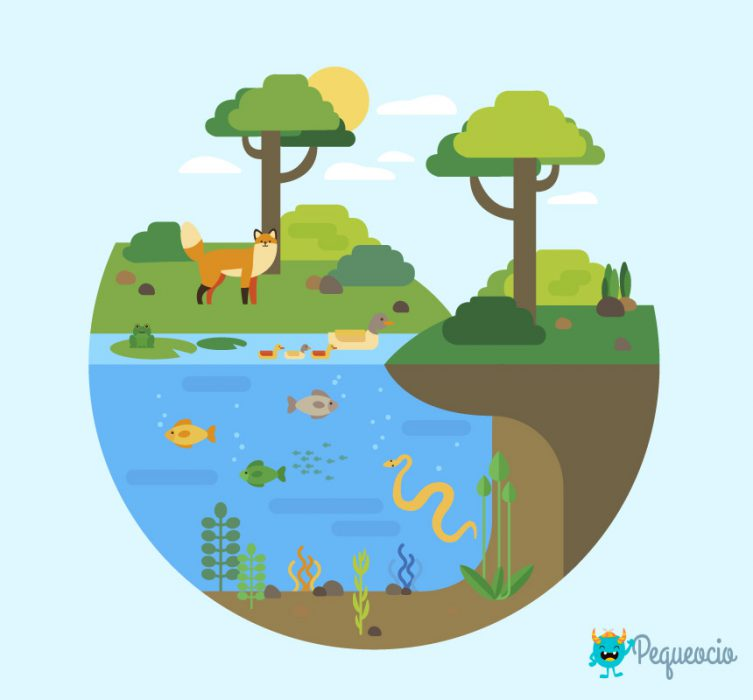
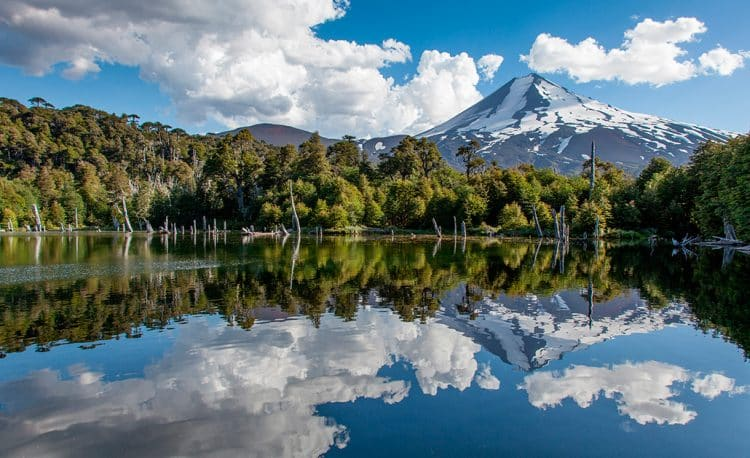
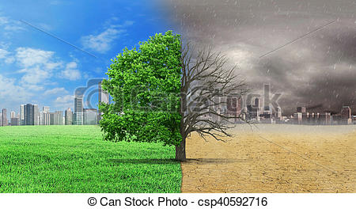

los bosques acciones para cuidar el medio ambiente


¿por qué es importante el cuidado del medio ambiente?
El medio ambiente es muy importante, porque de el obtenemos agua, comida, combustibles y materias primas que sirven para fabricar las cosas que utilizamos diariamente. El es nuestro hogar, de el depende nuestra existencia humana. Al abusar o hacer mal uso de los recursos naturales que se obtienen del medio ambiente, lo ponemos en peligro y lo agotamos. El aire y el agua están contaminándose, los bosques están desapareciendo, debido a los incendios y a la explotación excesiva y los animales se van extinguiendo por el exceso de la caza y de la pesca.
Por lo consiguiente, si el medio ambiente es nuestra casa, ¿porque lo estamos destruyendo? el nos brinda todos los recursos indispensable para la continuidad de la vida en el planeta. Es nuestra casa, cuidemos y conservemos de ella no solo por nosotros, sino por nuestros hijos y nietos que merecen vivir en mundo mejor. Demostremole la importancia que el se merece para nosotros los humanos.
